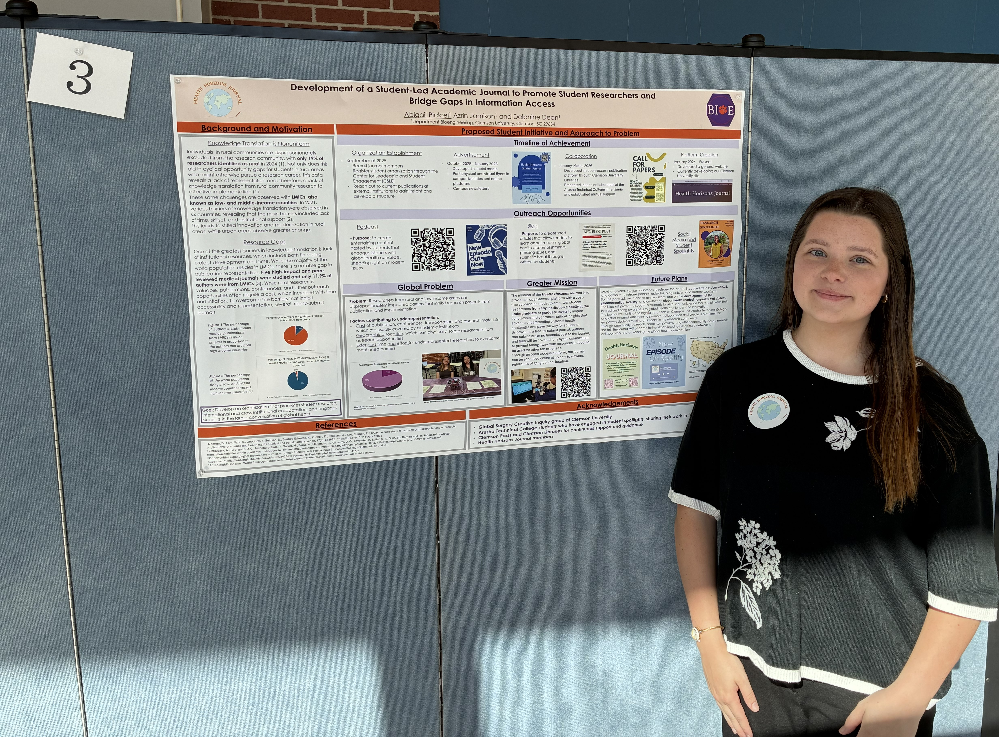
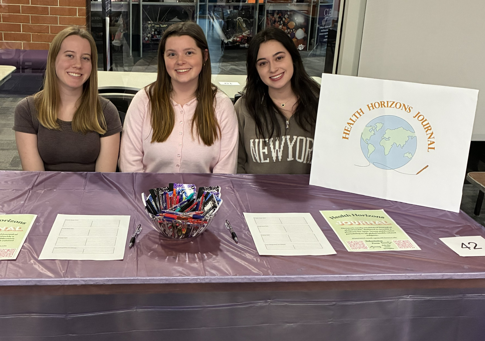
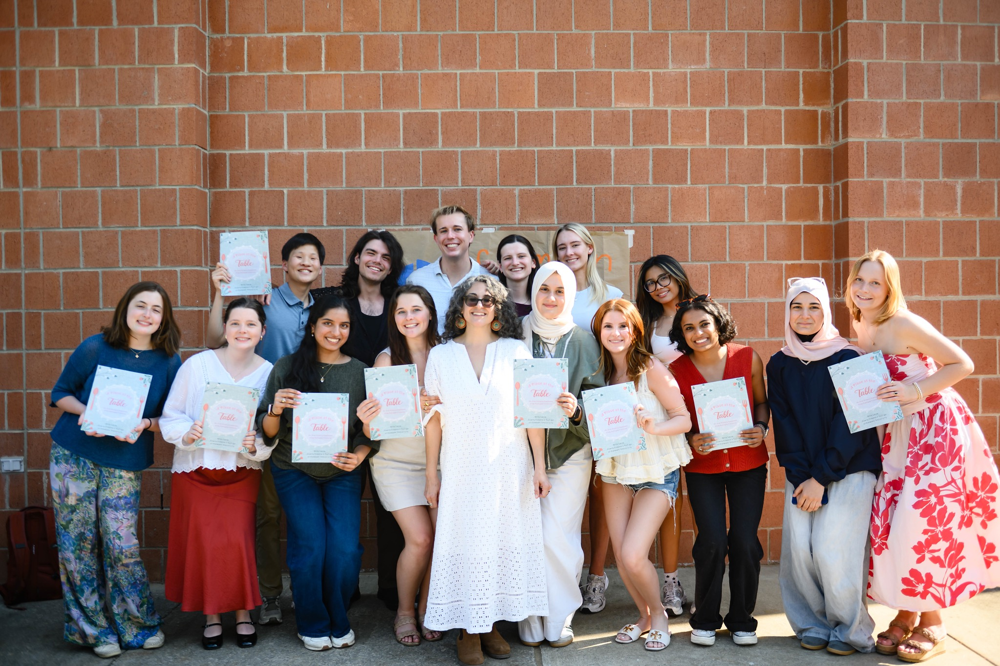
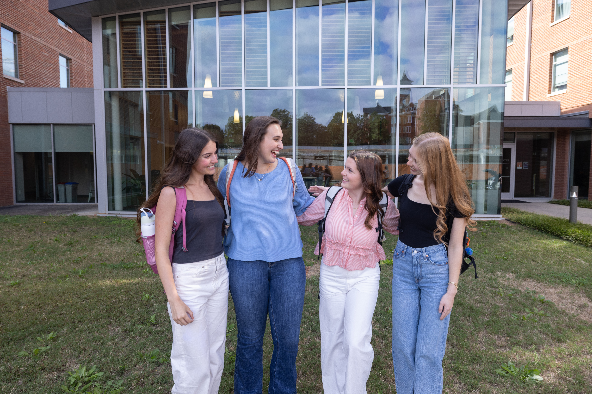
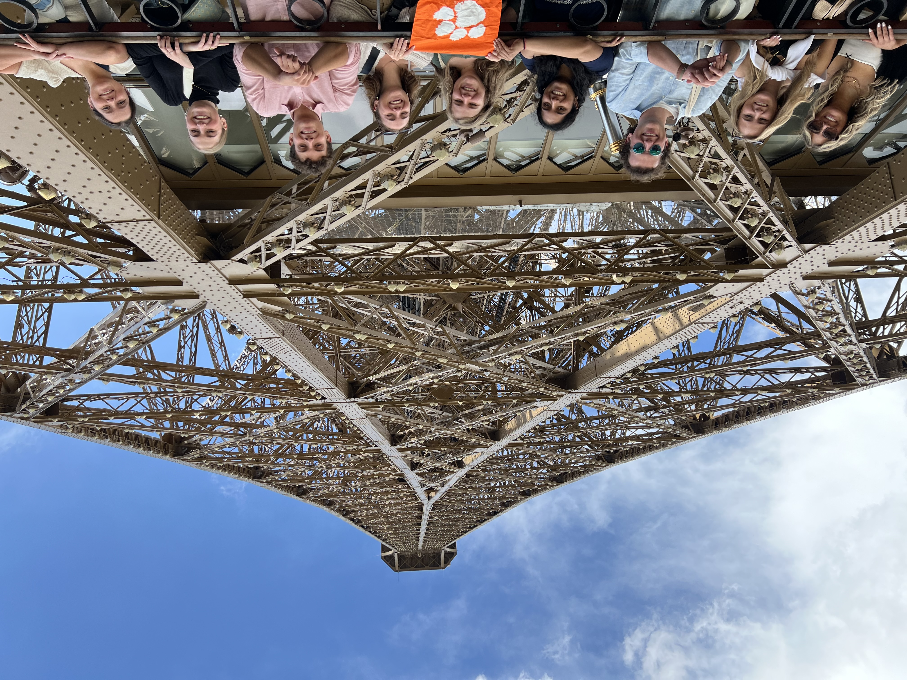
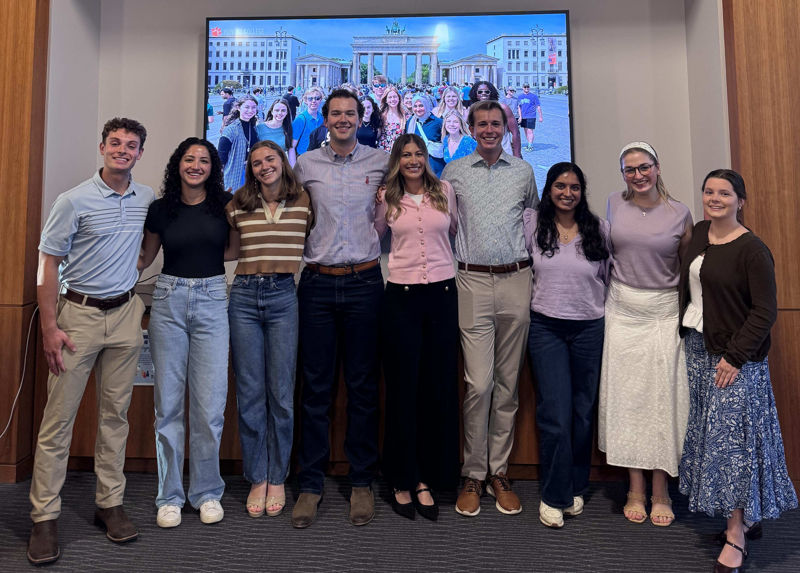

Campus Involvement
Through my campus involvement I have explored community outreach, event planning and organization, and more.


I am the founder and president of the Health Horizons Journal, which is Clemson University's first and only peer-reviewed, open access, and student-led global health journal. The mission of this journal is to promote student research, technical writing, and to provide a platform for manuscripts to be published so that anyone with access to the internet will be able to access this work. Manuscripts are free to submit, and DOIs are covered by the student organization. This organization was established in the Fall of 2025 and became active in the spring of 2026, presenting at MUSC, reaching out to peer reviewers, and the debut issue is being finalized currently.
.JPG)
In my first year at Clemson, I participated in the Clemson Blood Bowl and little did I know that in the Spring of 2026, I would officially join the community service organization that runs the event. I was able to pitch a school supplies drive in collaboration with Every Campus a Refuge (ECAR) and this event was successfully carried out by the executive board. I also participated in a bake sale to raise money for the student organization. Finally, I was able to volunteer with Scouting University, where our organization hosted local boys scouts and did activities.

Every Campus A Refuge, also known as ECAR, has been a highlight of my Clemson career. I joined this organization in the Spring of 2026 and had the opportunity to grow close with my peers who share a passion for serving the community and I also had the pleasure of growing close with one of the refugee families in the area through home visits. The organization was able to publish a cookbook full of cultural recipes from our families.
Honors Programs and Involvement
Through the honors college I have served as a peer mentor, ambassador, and explore interdisciplinary fields to become a more knowledgeable, well-rounded individual.

As an honors ambassador, I have done Q&As for incoming or prospective honors students, led tours of the honors facility, and demonstrated my knowledge of the college through giving presentations and sharing my experiences and involvement at events.


The Global Policy Scholars program transformed my undergraduate experience. I developed a strong interest in global policy and was able to travel outside of the United States for the first time in the summer of 2024. This experience led me to adding political Science as one of my minors because I realized, in order to be an effective researcher and engineer, I also need to be a well-informed citizen.
.jpg)
Through the Dixon Fellows program 2023-2024, I gained a unique opportunity to join a weekly gathering with other honors students interested specifically in engineering and entrepreneurship. We were able to walk through the design process, create prototypes, discuss ideas, and enter the pitch competition at the Launchpad in downtown Clemson.
Involvements Not Pictured Above
Honors Peer Mentor (2024 - 2026)
CUSG Donor Relations and Service Committee (2025-2026)
Bioengineering Advisory Council (Fall 2025 - present)
Society of Women Engineers